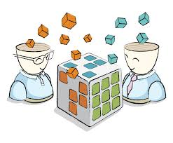

¿Qué es?
La gestión del conocimiento es el conjunto de estrategias destinadas a estimular la creación de nuevo conocimiento en las organizaciones, así como su adecuada difusión y aplicación a la obtención de resultados, de manera de aumentar su capital intelectual.

¿Qué busca?
La construcción de organizaciones de aprendizaje o inteligentes, que son aquellas que desarrollan nuevas formas de alcanzar y superar su misión, adaptándose rápidamente a los cambios de contexto, en un marco claro de valores.
¿Que Responde?
- ¿Qué sabemos?.
- ¿Qué nos sirve de lo que sabemos?
- ¿Quién tiene lo que sabemos?
- ¿Dónde está lo que sabemos?
- ¿Qué es lo que necesitamos saber?
- ¿Dónde encontrar lo que no sabemos?
- ¿Quién tiene lo que no sabemos?